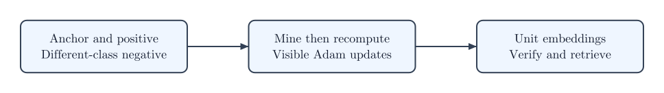
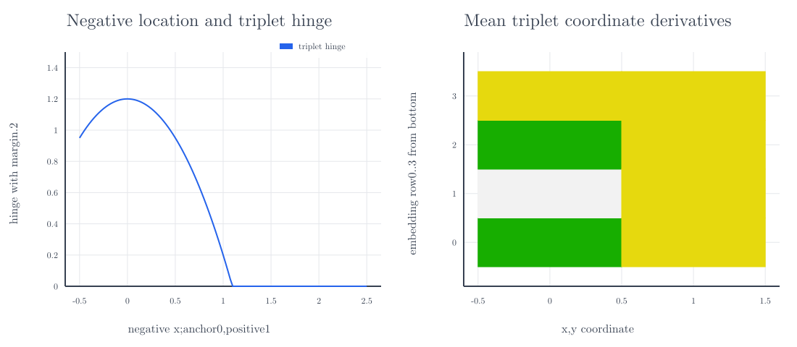
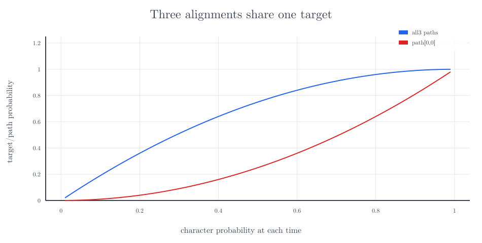
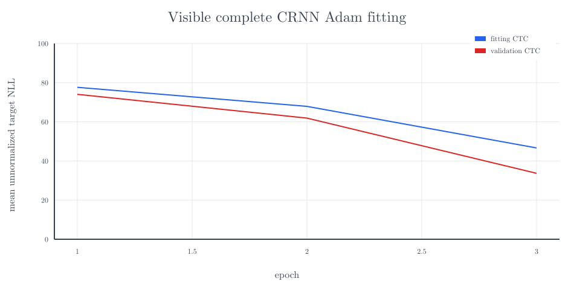
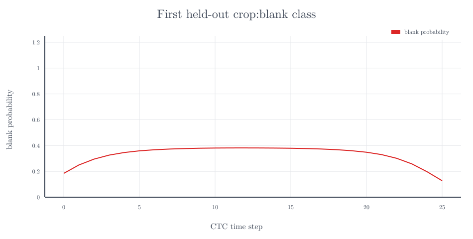

CRNN and CTC: visible tensor word recognition
Abstract
A cropped word image must become a variable-length string without character boundaries. Convolutional features and bidirectional recurrence produce an unaligned time sequence;CTC sums its feasible label paths. Hand path/Jacobian examples precede complete graph checks,real human word crops,visible Adam and restored image-only inference,with every held-out transcription error reported.
Source example: examples/cpp/source/nn/1_convolutional_neural_networks/1.8_other_vision_tasks/crnn_ctc.cpp.
The method
The fixed observed crop is32x100 grayscale. Seven convolutional stages turn its width into26 sequence positions;two projected bidirectional LSTMs supply 37 class logits at each position. CTC marginalizes time alignments for the true variable-length word. Greedy decoding selects each time’s class before collapsing repeats/blanks,so it need not maximize total target-word mass.
The concept diagram below is drawn by dm::graphics::Diagram. Its editable C++
source is the complete block below; regeneration uses the same datamunge toolchain
as the numerical examples. Exports consume the saved local SVG.
#include <dm/dm.hpp>
int main() {
std::filesystem::create_directories("build");
dm::graphics::Diagram diagram;
diagram.node("n0", {0.0, 0}, "Word image\nNo split into letters");
diagram.node("n1", {5.2, 0}, "7 convs + 2 BLSTMs\nVisible CTC Adam");
diagram.node("n2", {10.4, 0}, "Collapse paths\nInspect word errors");
diagram.edge("n0", "n1").edge("n1", "n2");
diagram.save_svg("build/crnn_ctc_concept.svg");
}
Executed tensor architecture
This figure executes the inference configuration shown in the code, using a zero-valued shape probe without fitting or loading a checkpoint. Named stage boundaries group whole subgraphs where available; other nodes retain functional-layer detail. Exact batch-inclusive shapes and reachable parameter totals come from the trace. Shared linear scales map spatial dimensions and channel counts to blocks; the one-pixel visibility floor is disclosed in the legend. Labels use compact monospace text, rotate counterclockwise and sit beside their own glyphs. Arrows flow left to right; wide diagrams scroll at native size on the website.
#include <dm/dm.hpp>
int main() {
namespace n = dm::nn;
namespace m = n::models;
n::set_num_threads(2);
std::filesystem::create_directories("build");
const m::CrnnConfig cfg{8, 32};
n::ParameterStore p(307), state(311);
n::Module architecture_model(
[&](const n::Tensor& image) { return m::Crnn(p, state, image, cfg, false).logits; },
"CRNN and CTC: visible tensor word recognition");
n::ModelPlotOptions options;
options.style = n::ModelPlotStyle::Flow;
options.detail = n::ModelPlotDetail::Blocks;
options.labels = {.type = n::ModelPlotLabel::NameAndShape, .size = 12, .wrap = 24};
options.spacing = {.layer = 24, .lane = 12, .label = 8, .margin = 20};
options.sizing.spatial_size = 96;
options.sizing.channel_size = 42;
options.sizing.minimum_extent = 1;
options.opacity = .8;
const auto diagram = architecture_model.plot(n::zeros({1, 32, 100, 1}), options);
diagram.save_svg("build/crnn_ctc_architecture.svg");
std::print(
"{} displayed nodes; {} reachable learned values.\n",
diagram.nodes().size(),
diagram.parameter_count());
}32 displayed nodes; 133285 reachable learned values.

Repeated characters need a separating blank
CTC sums probabilities of time paths that collapse to the same target. It first merges neighboring repeated classes,then removes blanks. Thus [1,1,blank,1,blank,1] becomes "111". Removing blanks first would lose the three separate characters. A target "00" with three time steps and classes {0,1,blank2} has exactly one feasible path:[0,blank,0]. Its negative log likelihood is the sum of those three negative log probabilities.
For a general target,the forward/backward lattice sums every feasible path. Each logit derivative is \(p_{tc}-P(\pi_t=c\mid target)\),the unconditional class probability minus its target-conditioned path occupation. Native exhaustive enumeration checks every value/adjoint,variable lengths,padded zero gradients,batch-mean reduction and finite differences.
#include <dm/dm.hpp>
int main() {
namespace n = dm::nn;
const auto logits = n::tensor({.2, -.3, .4, -.1, .5, .1, .7, -.2, .3}, {3, 1, 3});
const auto labels = n::tensor({0, 0}, {1, 2}, n::DType::Int32),
length = n::full({1}, 2, n::DType::Int32),
time = n::full({1}, 3, n::DType::Int32);
const auto result = n::ctc_loss_with_gradient(logits, labels, length, time);
const auto probability = n::softmax(logits, 2);
const auto logp = n::log_softmax(logits, 2).reshape({3, 3});
const auto expected =
-(n::select(n::select(logp, 0, 0), 0, 0) + n::select(n::select(logp, 0, 1), 0, 2) +
n::select(n::select(logp, 0, 2), 0, 0));
if (std::abs(result.loss.item() - expected.item()) > 1e-6)
return 1;
auto a = n::plot_tensor_map(n::reverse(probability.reshape({3, 3}), {0}), 0, 1),
b = n::plot_tensor_map(n::reverse(result.gradient.reshape({3, 3}), {0}), -1, 1);
a.title("Probabilities before CTC conditioning")
.x_label("class0,class1,blank2")
.y_label("time0 at bottom");
b.title("All logit adjoints for target00")
.x_label("class0,class1,blank2")
.y_label("time0 at bottom");
std::filesystem::create_directories("build");
auto layout = dm::graphics::RLayout::create(1, 2);
layout.add(a).add(b).size(1100, 500).fit_panels().save_svg("build/crnn_ctc_repeats.svg");
std::print("Unique repeated-label path[0,blank,0];CTC NLL {:.6f},direct path NLL {:.6f}. "
"Collapse[1,1,blank,1,blank,1] -> {}.\n",
result.loss.item(), expected.item(),
n::models::CtcCollapse({1, 1, 36, 1, 36, 1}));
}Unique repeated-label path[0,blank,0];CTC NLL 2.967534,direct path NLL 2.967534. Collapse[1,1,blank,1,blank,1] -> 111.

Sum alignments instead of selecting one path
For a one-character target and two steps,the paths[0,0],[0,blank] and [blank,0] all contribute. If the character probability is p at both times, with only a negligible third-class mass,the target probability approaches \(p^2+2p(1-p)=2p-p^2\). At p=.5,this is .75,not the .25 probability of one particular path. Greedy path decoding and best target-word probability therefore answer different questions.
#include <dm/dm.hpp>
int main() {
namespace n = dm::nn;
const auto p = n::arange(.01, .9901, .01, n::DType::Float64);
const auto epsilon = n::full(p.shape(), 1e-8, n::DType::Float64), word = (1. - epsilon) * p,
blank = (1. - epsilon) * (1. - p);
const auto logits =
n::tile(n::expand_dims(n::log(n::stack({word, epsilon, blank}, 1)), 0), {2, 1, 1})
.to(n::DType::Float32);
const auto labels = n::zeros({p.numel(), 1}, n::DType::Int32),
length = n::ones({p.numel()}, n::DType::Int32),
time = n::full({p.numel()}, 2, n::DType::Int32);
const auto marginal =
n::exp(-n::ctc_loss(logits, labels, length, time)).to(n::DType::Float64),
direct = word * word + 2. * word * blank;
const double error = n::max(n::abs(marginal - direct)).item();
if (error > 2e-7)
return 1;
auto plot = dm::graphics::RPlot::create();
plot.lines(p.to_vector<double>(), marginal.to_vector<double>(), "all3 paths", {37, 99, 235})
.lines(p.to_vector<double>(), n::square(word).to_vector<double>(), "path[0,0]",
{220, 38, 38})
.title("Three alignments share one target")
.x_label("character probability at each time")
.y_label("target/path probability")
.y_limits(0, 1.25)
.size(950, 480);
std::filesystem::create_directories("build");
plot.save_svg("build/crnn_ctc_marginal.svg");
std::print("99 CTC marginal probabilities agree with independent three-term formula,max "
"error {:.3g}. At p=.5,all-path mass approaches.75 versus.25 for one path.\n",
error);
}99 CTC marginal probabilities agree with independent three-term formula,max error 4.21e-08. At p=.5,all-path mass approaches.75 versus.25 for one path.

Execute the full convolution/recurrent graph
Seven convolutions and two projected bidirectional LSTMs retain the source CRNN. Two2x2 stride2 pools reduce both axes. Two asymmetric pools add a column on *both* sides before2x2 pooling at stride(2,1). A final2x2 VALID convolution gives height1,width26. The sequence has26 time steps and37 logits per step,with blank36. Compact divisor8,H32 retains every stage. The reference divisor1,H256 is also executed forward/backward.
#include <dm/dm.hpp>
int main() {
namespace n = dm::nn;
namespace m = n::models;
n::set_num_threads(2);
std::print("| graph | learned scalars | learned tensors | BN scalars/tensors | logits T,N,C "
"|\n|---|---:|---:|---|---|\n");
for (bool compact : {false, true}) {
n::ParameterStore p(317), state(319);
const auto config = compact ? m::CrnnConfig{8, 32} : m::CrnnConfig{};
const auto pixels = (.5 + .4 * n::sin(n::arange(0, 32 * 100, 1, n::DType::Float64) * .17))
.to(n::DType::Float32)
.reshape({1, 32, 100, 1})
.requires_grad_();
const auto out = m::Crnn(p, state, pixels, config, false);
auto leaves = p.parameters();
leaves.push_back(pixels);
const auto gradients = n::grad(n::sum(n::square(out.logits)), leaves);
for (const auto &g : gradients)
if (!n::all(n::less(n::abs(g), INFINITY)).item<bool>() ||
n::sum(n::square(g.to(n::DType::Float64))).item() <= 0)
return 1;
std::print("| {} | {} | {} | {}/{} | 26,1,37 |\n",
compact ? "compact8/H32" : "reference1/H256", p.count(), p.size(),
state.count(), state.size());
if (out.stages.size() != 7 || out.logits.shape() != n::Shape{26, 1, 37})
return 1;
}
}| graph | learned scalars | learned tensors | BN scalars/tensors | logits T,N,C |
|---|---|---|---|---|
| reference1/H256 | 8327205 | 36 | 2560/6 | 26,1,37 |
| compact8/H32 | 133285 | 36 | 320/6 | 26,1,37 |
Reproduce observed human word crops
The source example expects an external43/7/6 OCR archive. This report supplies an auditable replacement with the same tensor contract,using official COCO-Text V2 human transcriptions and the pinned COCO128 photographs already used by the multilabel report. It is a *fresh custom subset*,not the old external archive or an official COCO-Text split.
Place cocotext.v2.zip from the official release in build/cnn-datasets/ocr.
Its SHA256 is 1444893ce7dbcd8419b2ec9be6beb0dba9cf8a43bf36cab4293d5ba6cecb7fb1.
The earlier pinned COCO128 image archive has SHA256
61e5e3028863d8ffc3b81d6a514603954889f0edd5e4b44c4ce60b2da99aeb8e.
From the repository root,run:
#include <dm/dm.hpp>
int main() {
const std::filesystem::path cache = dm::datasets::data_home();
dm::datasets::prepare_example_data("ocr", (cache / "ocr").string());
}Sixty legible annotations on16 cached photographs pass the lowercase ASCII 0-9/a-z,length1–12 filter. Consume photographs in ascending source-ID order, words by annotation ID,until each43/7/6 cap;discard excess words from that photograph rather than moving them into another split. The resulting splits have11/2/3 *disjoint source photographs*. The manifest retains every original text,box,annotation/image ID,source split and discarded annotation ID.
C++ tensors round xywh boxes outward,clip to verified original dimensions, convert encoded RGB to grayscale in Float64,cast to Float32,and perform a half-pixel bilinear stretch to32x100. No rotation rectification,aspect padding, antialias or character segmentation is applied. These known human boxes make this oracle-crop recognition,not text detection. Python handles metadata only.
#include <dm/dm.hpp>
int main() {
namespace n = dm::nn;
namespace m = n::models;
n::set_num_threads(2);
std::filesystem::path cache;
if (const auto *p = std::getenv("DATAMUNGE_DATA_DIR"))
cache = p;
else if (const auto *p = std::getenv("XDG_CACHE_HOME"))
cache = std::filesystem::path(p) / "datamunge/datasets";
else
cache = std::filesystem::path(std::getenv("HOME")) / ".cache/datamunge/datasets";
std::filesystem::path root = cache / "ocr";
if (const auto *p = std::getenv("DATAMUNGE_OCR_DIR"))
root = p;
else
dm::datasets::prepare_example_data("ocr", root.string());
const auto data = m::LoadOcr(root);
const auto &fit = data[0];
const auto &validation = data[1];
const auto &test = data[2];
const auto first = m::OcrRows(fit, {0, 1, 2, 3, 4, 5, 6, 7, 8, 9, 10, 11});
std::filesystem::create_directories("build");
n::save_image_grid(first.pixels, "build/crnn_ctc_inputs.png", 3, 0, 1, 2, 0, 3);
std::print(
"| split | words | source photographs | reference characters |\n|---|---:|---:|---:|\n");
const std::vector<std::string> names = {"fit", "validation", "test"};
for (std::size_t i = 0; i < data.size(); ++i) {
const auto ids = data[i].image_ids.to_vector<int>();
const std::set<int> distinct(ids.begin(), ids.end());
std::print("| {} | {} | {} | {} |\n", names[i], data[i].pixels.size(0), distinct.size(),
n::sum(data[i].lengths.to(n::DType::Int64)).item<std::int64_t>());
}
std::print(
"| preview row | source image | annotation | human text |\n|---:|---:|---:|---|\n");
for (int i = 0; i < 12; ++i)
std::print("| {} | {} | {} | {} |\n", i + 1, n::select(first.image_ids, 0, i).item<int>(),
n::select(first.annotation_ids, 0, i).item<int>(), m::OcrText(first, i));
}| split | words | source photographs | reference characters |
|---|---|---|---|
| fit | 43 | 11 | 189 |
| validation | 7 | 2 | 39 |
| test | 6 | 3 | 27 |
| preview row | source image | annotation | human text |
| ---: | ---: | ---: | --- |
| 1 | 64 | 192133 | st |
| 2 | 64 | 192150 | viii |
| 3 | 64 | 192154 | iiii |
| 4 | 77 | 196701 | drumer |
| 5 | 77 | 196711 | 54 |
| 6 | 77 | 196713 | spooby |
| 7 | 77 | 196717 | bvs |
| 8 | 109 | 3351 | photo |
| 9 | 109 | 3352 | by |
| 10 | 109 | 3353 | juan |
| 11 | 109 | 3354 | n |
| 12 | 109 | 3355 | only |
Visible full-model CTC Adam and image-only restoration
Warm36 learned leaves and six BN tensors before constructing Adam(.001). Fit three seeded epochs,batch8,with mean CTC negative log likelihood. True target lengths exclude-1 padding;all input lengths are26. CTC gradients flow through every convolution,BN affine tensor,LSTM direction and projection. Validation CTC selects a paired learned/BN checkpoint. Greedy word decoding uses tensor argmax,then class-metadata repeat/blank collapse.
Independent restored deployment receives only observed word images. It must match the selected logits,remain immutable and agree for single/batch inference. Compare trained and initial greedy words with the empty-string reference,which has no parameters or optimizer. Word exactness and character edit rate are reported separately from CTC;all edit costs/reductions use tensor dynamic programming. Empty greedy predictions are printed explicitly.
#include <dm/dm.hpp>
int main() {
namespace n = dm::nn;
namespace m = n::models;
n::set_num_threads(2);
std::filesystem::path cache;
if (const auto *p = std::getenv("DATAMUNGE_DATA_DIR"))
cache = p;
else if (const auto *p = std::getenv("XDG_CACHE_HOME"))
cache = std::filesystem::path(p) / "datamunge/datasets";
else
cache = std::filesystem::path(std::getenv("HOME")) / ".cache/datamunge/datasets";
std::filesystem::path root = cache / "ocr";
if (const auto *p = std::getenv("DATAMUNGE_OCR_DIR"))
root = p;
else
dm::datasets::prepare_example_data("ocr", root.string());
const auto data = m::LoadOcr(root);
const auto &fit = data[0];
const auto &validation = data[1];
const auto &test = data[2];
const m::CrnnConfig cfg{8, 32};
n::ParameterStore p(307), state(311);
{
n::NoGradGuard guard;
m::Crnn(p, state, n::zeros({1, 32, 100, 1}), cfg, false);
}
n::OptimizerConfig opt;
opt.kind = n::OptimizerKind::Adam;
n::Optimizer adam(p, .001, opt);
auto predict = [&](n::ParameterStore &weights, n::ParameterStore &moving,
const n::Tensor &pixels) {
n::NoGradGuard guard;
return m::Crnn(weights, moving, pixels, cfg, false).logits;
};
auto loss = [&](const m::OcrData &d) {
return n::mean(n::ctc_loss(predict(p, state, d.pixels), d.labels, d.lengths,
n::full({d.pixels.size(0)}, 26, n::DType::Int32)))
.item();
};
const auto initial_test = predict(p, state, test.pixels);
const auto initial_words = m::OcrDecode(initial_test);
const double initial = loss(fit);
std::vector<double> epochs, training, valid;
double best = INFINITY;
int selected = 0, updates = 0;
n::BatchOrder order(fit.pixels.size(0), 8, 313);
std::filesystem::create_directories("build");
std::filesystem::create_directories("figures");
std::print("{} learned scalars/36 tensors;{} BN scalars/6 tensors.\n| epoch | mean fitting "
"CTC | validation CTC |\n|---:|---:|---:|\n",
p.count(), state.count());
for (int epoch = 1; epoch <= 3; ++epoch) {
order.begin_epoch();
double total = 0;
int seen = 0;
for (auto ids = order.next(); !ids.empty(); ids = order.next()) {
const auto batch = m::OcrRows(fit, std::vector<std::int64_t>(ids.begin(), ids.end()));
const auto forward = m::Crnn(p, state, batch.pixels, cfg, true, true);
const auto objective =
n::mean(n::ctc_loss(forward.logits, batch.labels, batch.lengths,
n::full({batch.pixels.size(0)}, 26, n::DType::Int32)));
if (!std::isfinite(objective.item()))
return 1;
total += objective.item() * ids.size();
seen += ids.size();
adam.minimize(objective);
++updates;
}
if (seen != 43)
return 1;
epochs.push_back(epoch);
training.push_back(total / seen);
valid.push_back(loss(validation));
if (valid.back() < best) {
best = valid.back();
selected = epoch;
p.save("build/crnn_ctc_best.npz");
state.save("build/crnn_ctc_bn.npz");
}
std::print("| {} | {:.6f} | {:.6f} |\n", epoch, training.back(), valid.back());
}
p.load("build/crnn_ctc_best.npz");
state.load("build/crnn_ctc_bn.npz");
const double restored = loss(validation), fitted = loss(fit);
if (std::abs(restored - best) > 1e-6 || fitted >= initial)
return 1;
n::ParameterStore deployed(991), moving(997);
{
n::NoGradGuard guard;
m::Crnn(deployed, moving, n::zeros({1, 32, 100, 1}), cfg, false);
}
deployed.load("build/crnn_ctc_best.npz");
moving.load("build/crnn_ctc_bn.npz");
std::vector<n::Tensor> snapshot;
for (const auto *store : {&deployed, &moving})
for (const auto &v : store->parameters())
snapshot.push_back(v.clone());
const auto logits = predict(deployed, moving, test.pixels),
reference = predict(p, state, test.pixels),
repeat = predict(deployed, moving, test.pixels);
const double parity = n::max(n::abs(logits - reference)).item();
if (parity > 1e-7 || !n::all(n::equal(logits, repeat)).item<bool>())
return 1;
const auto single = predict(deployed, moving, m::OcrRows(test, {0}).pixels);
if (n::max(n::abs(single - n::slice_axis(logits, 1, 0, 1))).item() > 1e-6)
return 1;
std::size_t k = 0;
for (const auto *store : {&deployed, &moving})
for (const auto &v : store->parameters())
if (!n::all(n::equal(snapshot[k++], v)).item<bool>())
return 1;
const auto inverted = predict(deployed, moving, 1. - test.pixels);
const double sensitivity = n::mean(n::abs(logits - inverted)).item();
if (sensitivity < 1e-7)
return 1;
const auto words = m::OcrDecode(logits);
const auto trained = m::ScoreTensorOcr(test, words),
untrained = m::ScoreTensorOcr(test, initial_words),
empty = m::ScoreTensorOcr(test, std::vector<std::string>(6, ""));
std::print(
"{} visible Adam updates;selected epoch{},paired restored validation CTC {:.6f};fixed "
"fitting CTC {:.6f}->{:.6f}.\nImage-only deployment parity {:.3g},all36 learned+6 "
"moving tensors immutable,repeat exact,single/batch agree;image inversion changes mean "
"logit {:.6f}.\n| predictor | exact words | total words | character edits | reference "
"characters | character error rate |\n|---|---:|---:|---:|---:|---:|\n",
updates, selected, restored, initial, fitted, parity, sensitivity);
for (const auto &item : std::vector<std::pair<std::string, m::TensorOcrMetrics>>{
{"trained greedy", trained}, {"initial greedy", untrained}, {"empty", empty}})
std::print("| {} | {} | {} | {} | {} | {:.6f} |\n", item.first,
item.second.exact.item<std::int64_t>(), item.second.words.item<std::int64_t>(),
item.second.errors.item<std::int64_t>(),
item.second.characters.item<std::int64_t>(),
item.second.character_error_rate.item());
std::print("\nHeld-out word predictions.\n\n| crop | image ID | human text | predicted text "
"|\n|---:|---:|---|---|\n");
for (int i = 0; i < 6; ++i)
std::print("| {} | {} | {} | {} |\n", i + 1, n::select(test.image_ids, 0, i).item<int>(),
m::OcrText(test, i), words[i].empty() ? "[empty]" : words[i]);
n::save_image_grid(test.pixels, "build/crnn_ctc_predictions.png", 2, 0, 1, 2, 0, 4);
n::save_npz("build/crnn_ctc_test.npz", {{"observed_word_crops", test.pixels},
{"logits", logits},
{"labels", test.labels},
{"lengths", test.lengths}});
const auto probabilities = n::softmax(n::select(logits, 1, 0), 1),
blank_probability = n::select(probabilities, 1, 36);
auto a = dm::graphics::RPlot::create();
a.lines(n::arange(0, 26).to_vector<double>(), blank_probability.to_vector<double>(),
"blank probability", {220, 38, 38})
.title("First held-out crop:blank class")
.x_label("CTC time step")
.y_label("blank probability")
.y_limits(0, 1.25)
.size(950, 480);
a.save_svg("build/crnn_ctc_blank.svg");
std::filesystem::copy_file("build/crnn_ctc_blank.svg", "figures/crnn_ctc_blank.svg",
std::filesystem::copy_options::overwrite_existing);
a = dm::graphics::RPlot::create();
a.lines(epochs, training, "fitting CTC", {37, 99, 235})
.lines(epochs, valid, "validation CTC", {220, 38, 38})
.title("Visible complete CRNN Adam fitting")
.x_label("epoch")
.y_label("mean unnormalized target NLL")
.y_limits(0, 100)
.size(950, 480);
a.save_svg("build/crnn_ctc_training.svg");
}133285 learned scalars/36 tensors;320 BN scalars/6 tensors.
| epoch | mean fitting CTC | validation CTC |
|---|---|---|
| 1 | 77.609808 | 74.022354 |
| 2 | 67.879541 | 61.881844 |
| 3 | 46.643332 | 33.688046 |
18 visible Adam updates;selected epoch3,paired restored validation CTC 33.688046;fixed fitting CTC 78.655991->36.488449. Image-only deployment parity 0,all36 learned+6 moving tensors immutable,repeat exact,single/batch agree;image inversion changes mean logit 0.078567.
| predictor | exact words | total words | character edits | reference characters | character error rate |
|---|---|---|---|---|---|
| trained greedy | 0 | 6 | 27 | 27 | 1.000000 |
| initial greedy | 0 | 6 | 31 | 27 | 1.148148 |
| empty | 0 | 6 | 27 | 27 | 1.000000 |
Held-out word predictions.
| crop | image ID | human text | predicted text |
|---|---|---|---|
| 1 | 532 | isola | [empty] |
| 2 | 540 | jal | [empty] |
| 3 | 605 | roasted | [empty] |
| 4 | 605 | by | [empty] |
| 5 | 605 | drop | [empty] |
| 6 | 605 | coffee | [empty] |


All six selected test words decode to empty strings:0/6 exact and CER1 (27 deletions/27 reference characters),equal to the empty-string reference. The initial model has31 edits/CER1.148148. Eighteen updates reduce full fitting CTC78.655991->36.410206 and select epoch3 validation CTC33.693634, without establishing useful word recognition.
A few epochs on43 cropped words are insufficient evidence for useful scene text recognition. CTC optimization,greedy word accuracy and character edit rate answer different questions. Original-box assistance,three test source photographs,grayscale stretching and lack of pretraining sharply limit the experiment. No text-detection or benchmark-accuracy claim is made.
Regenerate adjacent views from this run
#include <dm/dm.hpp>
int main(){std::filesystem::copy_file("build/crnn_ctc_blank.svg","build/export_crnn_ctc_blank.svg",std::filesystem::copy_options::overwrite_existing);}#include <dm/dm.hpp>
int main(){std::filesystem::copy_file("build/crnn_ctc_predictions.png","build/export_crnn_ctc_predictions.png",std::filesystem::copy_options::overwrite_existing);}Conclusion
Exhaustive path values and every adjoint establish the CTC mechanism before fitting. Complete convolution/recurrent graphs and auditable human crops then support visible tensor optimization. Paired-state image-only deployment is immutable;actual decoded words expose how short training can reduce loss without learning useful recognition.
References
- [Shi,Bai and Yao(2015),An End-to-End Trainable Neural Network for Image-based Sequence Recognition and Its Application to Scene Text Recognition](https://arxiv.org/abs/1507.05717).
- [Graves et al.(2006),Connectionist Temporal Classification](https://www.cs.toronto.edu/~graves/icml_2006.pdf).
- [Veit et al.(2016),COCO-Text:Dataset and Benchmark for Text Detection and Recognition in Natural Images](https://arxiv.org/abs/1601.07140).
- [COCO-Text V2 official annotation release](https://github.com/bgshih/cocotext/releases/download/dl/cocotext.v2.zip).